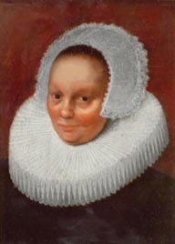

Anneke Jans
Anneke Jans  is said to have been born in what then was Norway in 1605. Her parents probably were Johannes and Tryntie. Her mother was a midwife. She seems to have taken the name "Anneke Jans" - and it has persisted historically.
Her father appears to have died before Anneke's marriage to her first husband, Roeloff Jansen, whom she wed in Amsterdam, Holland in April 1623. She was eighteen. He was twenty-three. Following the birth of their first three children, they emigrated to New Netherland in 1630. Roeloff was a Rensselaerswyck farmer and official who died in 1636. In 1638, she married Dominie Everardus Bogardus in New Amsterdam. The marriage appears to have produced eight or nine children before his accidental death at sea in 1647. Several of her children established prominent families of their own in the colony of New York.
Although she controlled substantial assets in and around Manhattan, following Bogardus's death, Anneke Jans gathered her family, sailed up the Hudson, and settled in Beverwyck. She lived in a landmark house on the north side of State Street and Middle Alley.
Stating that she was "sick in bed," Anneke Jans filed a will in January 1663. It described her family and her estate. She is said to have died in Beverwyck in February 1663 and to have been buried in the church plot.
As a fairly detailed (and at the same time not closely verifiable) folk history of her life has evolved over the ensuing centuries, Anneke Jans has become perhaps the most "legendary" woman to live in early Albany! Sadly (yet predictably), we have not been able to add significantly to her story.
Online resources: Start here. Two thoughtful (and detailed) considerations of her legend are among the most notable.
Likenesses: This adaptation of a portrait has not been verified but has been used many times to represent Anneke Jans. The likeness shown here is taken from an online source. We seek information on its origins and provenance.
first posted 12/10/05; recast and updated 11/23/12; last revised 12/4/14